Turning GenAI demos into customer-ready stories
AWS GenAI Labs was formed to turn emerging AI capabilities into customer-facing demo experiences. As those demos grew beyond one-off examples, the team needed more than a place to store them; it needed a way to shape fragmented demo assets into customer-ready stories that could be understood, evaluated, and reused across the organization.
I joined as the founding designer with two responsibilities: shaping the customer-facing demo experiences, and productizing the internal Demo Portal from fragmented demo assets into a structured system for discovery, evaluation, reuse, and organization at scale.
Product transformation
directory →
scalable demo platform
Design value
ambiguous requests →
evidence-based decisions
AI-era practice
static handoff →
exploratory workflow
1. The birth of GenAI Labs
In summer 2024, AWS formed GenAI Labs to translate emerging AI capabilities into concrete industry workflows for customer-facing conversations. The team created demos that helped customers understand where AI could fit into their business operations and make more informed decisions about adopting AWS AI solutions.
I joined as the founding designer with two responsibilities: shaping the customer-facing demo experiences, and productizing the internal Demo Portal from fragmented demo assets into a structured system for discovery, evaluation, reuse, and organization at scale.
2. Phase 1 — establishing discoverability as a strategy
When I joined, the Demo Portal already had an early internal version. It functioned as a placeholder for hosting demos, but it did not yet give field teams a clear structure for discovering what existed, understanding relevance, or returning to useful demos later. See GenAI Labs Demo Portal UI/UX discussion – Phase 1 for the early audit and Phase 1 problem framing.
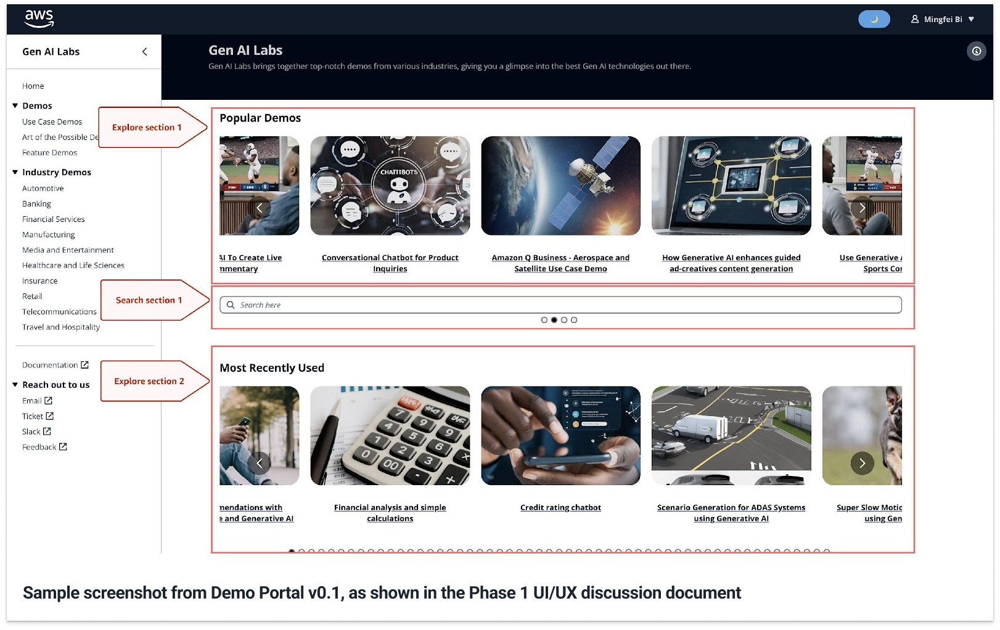
The initial task was framed by the leadership team as a search problem. Instead of treating that as a feature request, I looked at what "better search" was expected to solve: Technical Sales teams needed to find relevant demos quickly enough to prepare for customer conversations, understand whether a demo fit their industry context, and feel confident reusing it in the field. That shifted the design question from "How do we improve search?" to "How do we make relevant demos discoverable, understandable, and reusable across the SA workflow?" See Improve discoverability of demos on GenAI Labs Demo Portal for the discoverability strategy behind this reframing.
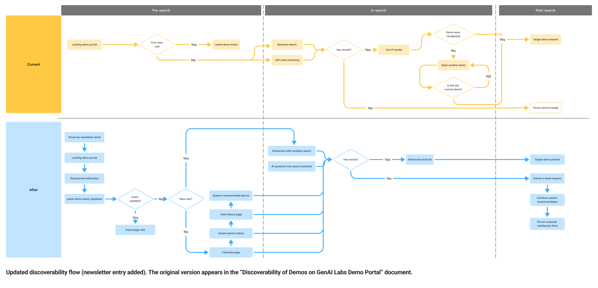
To answer that question, I synthesized several early inputs: onboarding conversations with five SAs from my team, internal sales enablement materials, the leadership team's search requirement, and my own review of the existing demo content. These inputs revealed that the problem extended beyond the search interaction itself. SAs needed support across a broader preparation workflow: before search, they needed a lightweight awareness layer for newly onboarded demos; during search, they needed structured metadata and taxonomy to narrow results with confidence; after search, they needed continuity through saving, reuse, or a way to signal unmet demo needs.
With the discovery model aligned, I returned to the leadership team's original search requirement and focused first on the during-search moment. The key dependency was not the search box itself, but the metadata and taxonomy that made relevant demos findable. To address that dependency, I aligned the Portal taxonomy with how Field SAs already organized their work: Industry → Sub-industry → Focus Area. This turned familiar business context into the navigation model itself, allowing SAs to start from their domain responsibility rather than a known demo name and narrow toward relevant demos with less cognitive effort.
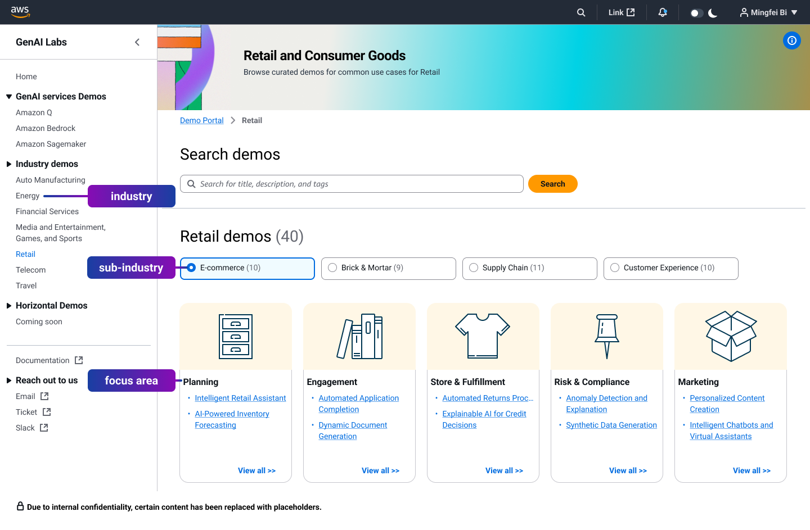
Based on this strategy, I defined the first redesign scope around three deliverables.
First, I designed a content-based email newsletter as a lightweight but repeatable discovery layer for pre-search awareness. The newsletter surfaced newly onboarded demos, industry alignment, and direct entry into the portal with minimal overhead.
Second, I defined search and result refinement around structured metadata, making it possible to narrow demos by defined attributes rather than relying only on keyword matching.
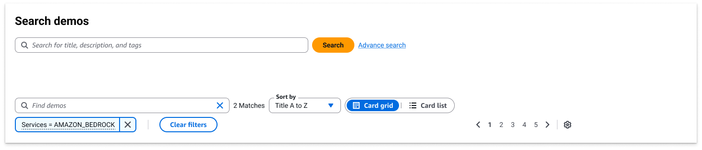
Third, I designed the homepage as a discovery entry point. Instead of presenting demos as a flat list, the homepage introduced newly launched demos at the top, supported direct navigation into industry categories, and gave SAs multiple ways to start discovery before typing a search query.

The first iteration shipped in early September 2024. At launch, North America SA adoption was approximately 5%. By November, it had grown to 92.2%, with global penetration reaching 40.7%.
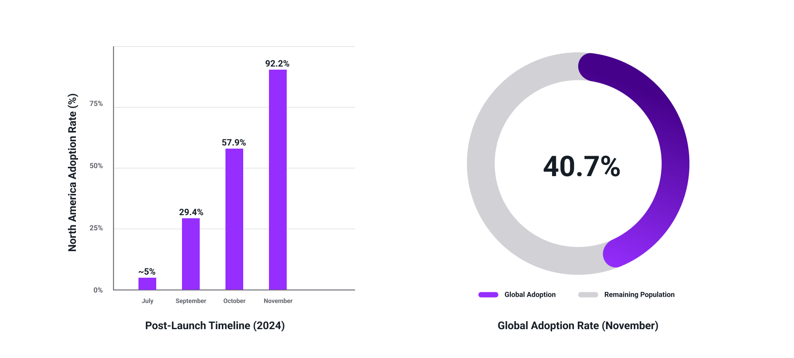
For internal users, the Portal was no longer a passive demo repository; it became a practical entry point for discovering GenAI demos and preparing customer-facing conversations. For the leadership team, the adoption curve helped build confidence that the broader discoverability strategy — not just a better search box — was the right direction for scaling demo work across the organization.
3. Phase 2 — redesigning for scaled demo evaluation
After Phase 1 launched, the Portal began moving from early regional adoption into broader organizational use. That shift accelerated around re:Invent 2024, where several GenAI Labs demos gained executive-level visibility and were referenced beyond the original North America field audience. Internal users could now find demos more easily, but increased visibility exposed a new problem: finding a demo did not always mean they could quickly judge its relevance for a specific customer-facing conversation. For re:Invent context, see the video below and see report (Chapter 3 only).
If the video above does not display successfully, please click the button below to watch it on YouTube. The link will start at 2:31:43 (append t=9103s to the URL to jump to the demo segment).
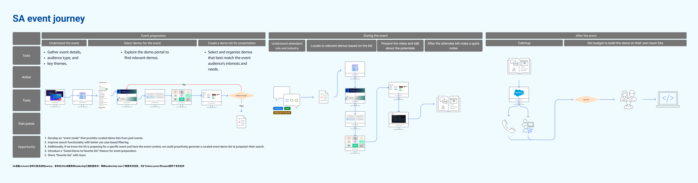
This issue was visible in the Detail Page data. Users were reaching the page, but approximately 42% left without further interaction, and average scroll depth remained below 30%. The breakdown was happening after discovery: internal teams could find demos, but the detail page did not clearly surface the signals they needed to evaluate relevance, understand customer fit, and decide whether a demo was ready to use in the field.
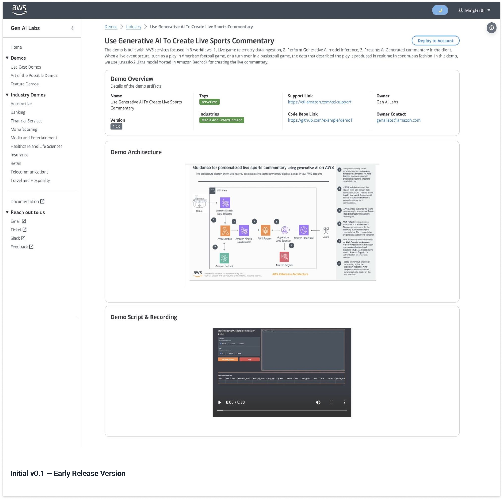
To define which signals were missing, I organized a focused design workshop with product, design, and SA perspectives. We translated open-ended feedback into two requirement areas: the decision signals needed to evaluate relevance, such as use case clarity and technical depth; and the confidence cues needed to determine whether a demo was ready to use in the field. See Workshop report for the workshop process behind this requirement framing.


Based on the workshop findings, I designed two directions for usability testing. The first was a condensed detail page that prioritized fast comprehension and a clear evaluation path. The second was a flexible widget-based version that allowed internal teams to customize which information appeared during preparation.
I then ran structured usability testing to compare how well each direction supported demo evaluation and preparation. The evaluation focused on clarity, task completion, and confidence, because those measures connected directly to whether internal teams could understand a demo, judge its relevance, and prepare for customer-facing conversations with less uncertainty. See Usability testing plan, Detail page usability testing report, and Usability testing report for the testing setup and research findings.
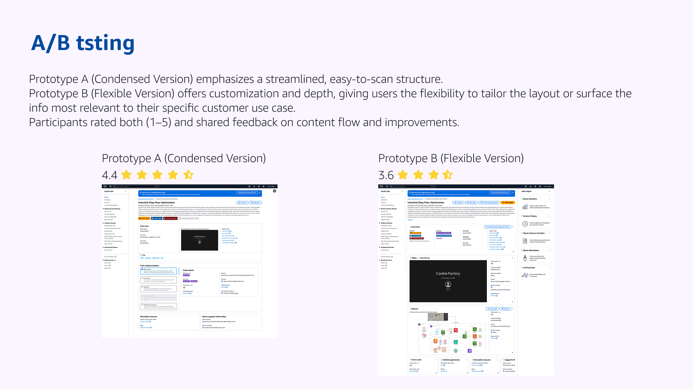
The condensed direction performed stronger, with an overall rating of 4.4 out of 5 compared with 3.6 out of 5 for the widget-based version. I moved forward with the condensed structure and documented the workshop plan, testing plan, usability report, and design rationale as shared team knowledge. This gave the team a repeatable foundation for future detail page decisions, rather than leaving the redesign as a one-off interface update.
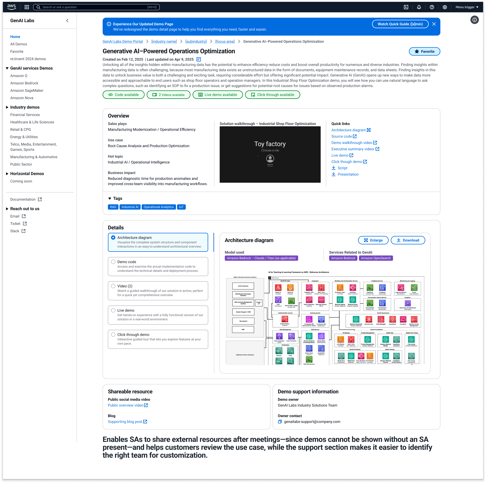
With the condensed direction selected, the redesigned detail page became the evaluation point in the broader demo workflow. At that moment, Favorites was introduced to close the loop after discovery: once internal teams identified a relevant demo, they could save it and return to it later for customer conversations, events, or follow-up preparation.
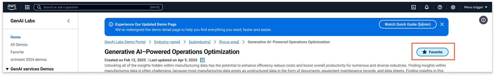
Search → Evaluate → Save → Reuse journey
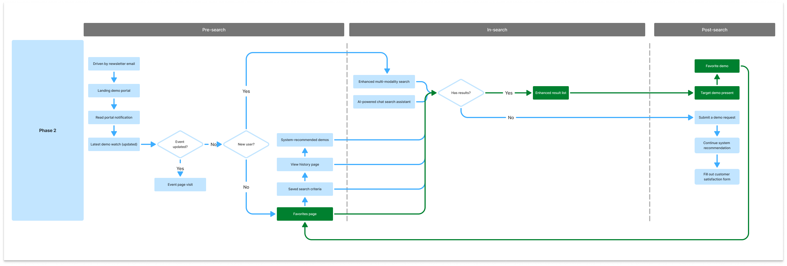
Across Phase 2, the team established a clearer mechanism for evaluating design value. The workshop translated ambiguous feedback into evaluation criteria; the two prototypes made those criteria visible through different product trade-offs; and usability testing showed which direction better supported internal teams' real preparation needs. By documenting that mechanism, future Portal decisions could build on the same decision logic instead of restarting the same questions from scratch.
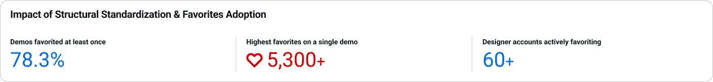
Phase 2 system outcome
4. Phase 3 — organizational shift and platform evolution
After GenAI Labs moved from Sales into Marketing, the Portal needed to continue serving existing Sales teams while adapting to a more complex Marketing use case. Product Marketing Managers were not preparing one demo for one customer conversation; they were managing event-level demo lineups across industries, services, and launch timelines. Within a single event, Product Marketing Managers (PMMs) operated at different levels: industry PMMs managed vertical-specific demos, service PMMs managed capability-specific demos, and lead PMMs coordinated the full demo lineup. The challenge was no longer only finding the right demo, but coordinating which demos belonged together, who was responsible for them, and when each demo could be shared with the right audience.
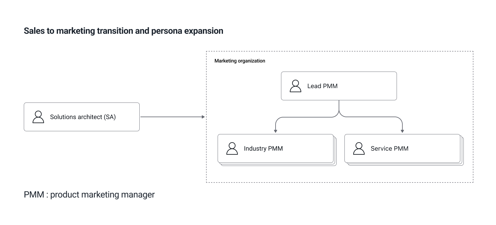
That exposed the limit of Favorites. Favorites worked for individual reuse, but Marketing needed Collections to manage ownership, timing, and visibility across event-ready demos. A demo could be technically ready before an event, but still need to stay hidden until a keynote announcement, a campaign launch, or the right customer-facing moment. Collections made that control explicit: who owned each part of the lineup, when a demo could be surfaced, and which audience should be able to see it.
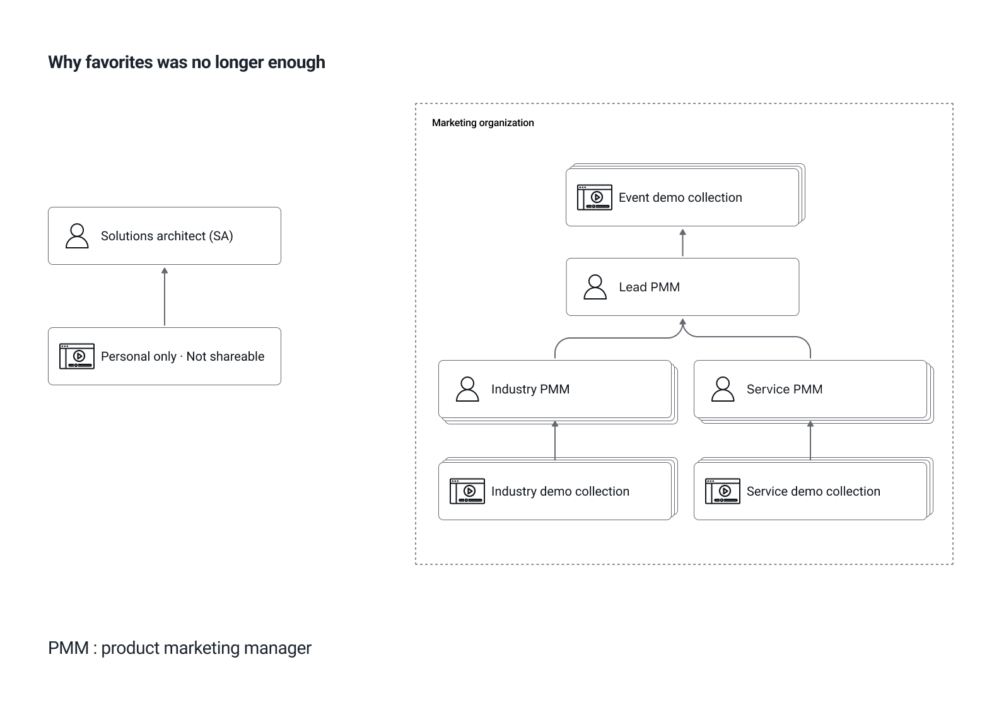
Based on those needs, Collections became the next evolution of the Portal's reuse model. Instead of treating saved demos as a personal list, Collections gave Marketing teams a controlled space to prepare event-ready demo groups, manage ownership across PMM roles, and decide when selected demos could move from internal preparation to customer-facing visibility.
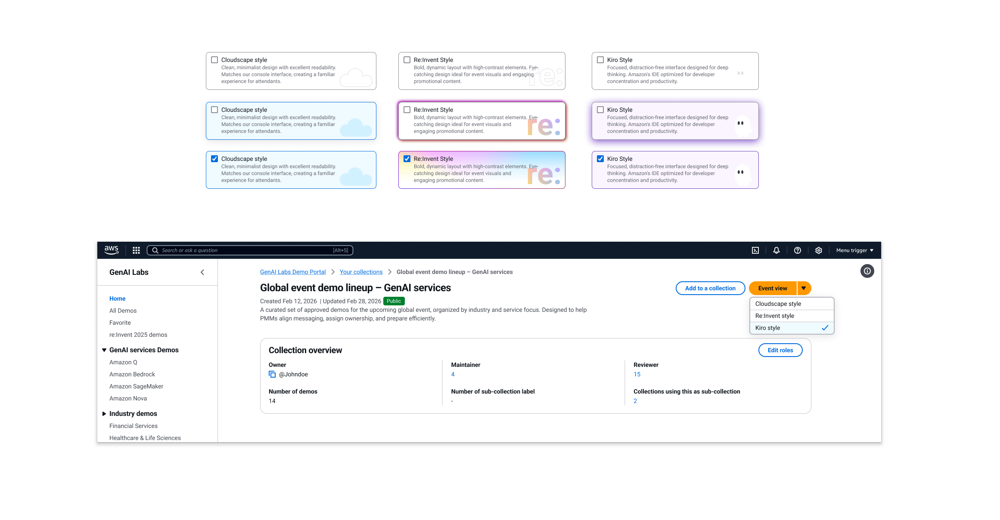
At the same time, the broader design environment was changing. As AI tools became more capable, I began exploring how design work could move beyond static handoff and become more testable before engineering started. For Collections, I connected the Collection card design to Kiro through Figma MCP, generating a working frontend baseline that the Portal implementation team could evaluate against the existing design system. Because the implementation team was stronger in backend data flow and architecture than in frontend design-system implementation, this workflow gave them a clearer starting point and reduced the manual effort of rebuilding UI from static screens. See view sample for the related implementation sample.
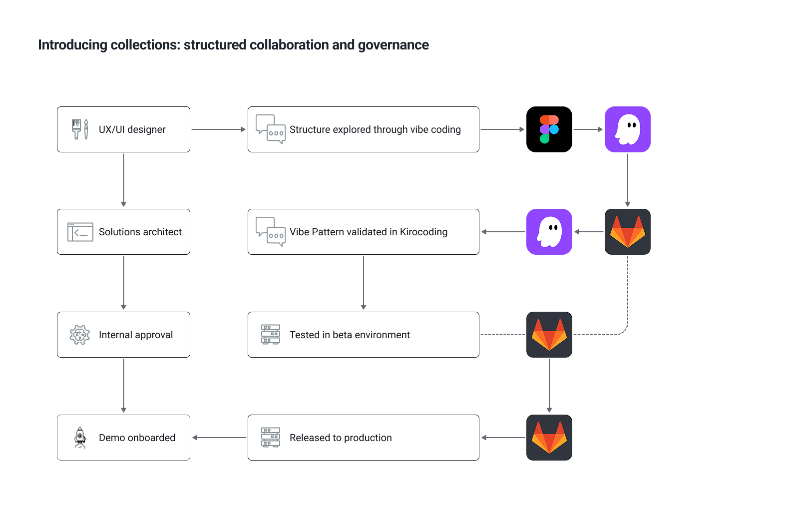
Kiro validation environment for Collection card
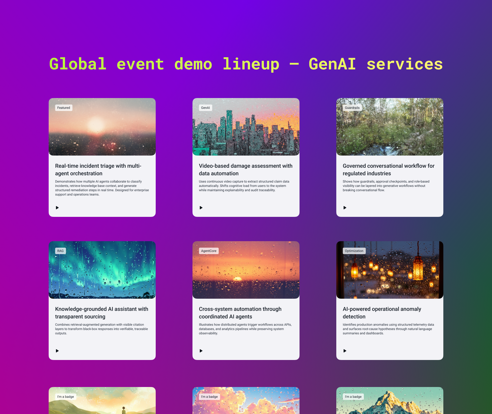
The goal of this AI-assisted workflow exploration was to understand how emerging AI tools could fit into the team's existing production workflow. Collections became one practical test case: the team could explore whether innovative design solutions built on top of existing design-system components could be evaluated earlier, before deeper engineering work began, and whether this kind of workflow could open more possibilities. See Meet Figma document and Meet Figma demo file for related AI workflow artifacts.
Phase 3 showed that the Portal could continue adapting as the organization changed. Instead of replacing the earlier discovery model, I treated it as a durable foundation: the system needed to preserve continuity for existing Sales teams while expanding to support Marketing's event planning and controlled publishing needs. The AI-assisted workflow exploration reflected the same design mindset: as the role of AI in product development was still being defined, I approached it as an active area of practice, combining my understanding of AI capabilities with a deeper view of the design process to explore how these tools could become part of the team's own production workflow.
5. Designing a new way of working in an AI-driven shift
I entered this work through a request to design the Demo Portal, and the project gradually became a way to demonstrate design value inside GenAI Labs. As the Portal evolved from a lightweight internal directory into a scalable product system, each phase made design's contribution more visible: reframing unclear needs in ways that earned leadership trust, turning team feedback into evidence that earned cross-functional trust, and building alignment around decisions that earned customer trust. Repeating that process across different stages helped establish a stronger design culture, where design became a trusted part of how the team approached increasingly complex work.